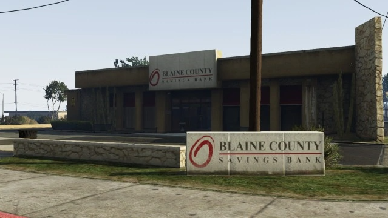

Bem-vindo ao nosso treinamento tático GRR.
Neste treinamento, você aprenderá as táticas e estratégias usadas pelo grupo de resposta rápida GRR, para planejar e executar operações de combate bem-sucedidas
na região norte da cidade Aurora.
Você também aprenderá a usar equipamentos e armas especiais, bem como técnicas avançadas de comunicação e trabalho em equipe para garantir a operação e
segurança dos membros da equipe. Prepare-se para adquirir habilidades valiosas e essenciais para combater de forma segura e eficaz como um membro
Policia Rodoviária Federado do Grupo de Resposta Rápida.
Vamos começar!
• BANCO PALETO BAY

QUANTIDADE: ☠️ Bandidos: Mínimo: 06 | Máximo: 07 (Sem refém)
👮 Policiais: Mínimo: 08 | Máximo: 13 (Sem refém)
QUANTIDADE: ☠️ Bandidos: Mínimo: 06 | Máximo: 08 (Com refém)
👮 Policiais: Mínimo: 08 | Máximo: 14 (Com refém)
🧍♂️ Reféns: Máximo 03
O conhecimento do perímetro de combate é crucial para ter uma operação bem-sucedida, pois permite planejar e executar as operações
com precisão e eficiência. Ele define as fronteiras da ação e fornece informações sobre as posições inimigas e as condições do terreno.
Isso ajuda os responsáveis pela ação a tomar decisões estratégicas e táticas, alocar recursos de maneira eficaz e garantir a segurança dos agentes.
Além disso, o conhecimento do perímetro de combate também é importante para a comunicação eficaz entre as equipes e para garantir a coordenação entre
as diferentes unidades envolvidas na operação.
A neutralização de áreas importantes é uma técnica usada para controlar ou conquistar áreas estratégicas em um combate, como pontos de defesa inimigos e pontos de comunicação.
Algumas das técnicas comuns usadas para neutralizar áreas importantes incluem:
Ataque aéreo: Aviões são usados para atacar instalações inimigas, causando danos significativos e impedindo que o inimigo as use.
Operações de assalto: Equipes de soldados são enviadas para atacar instalações inimigas, usando técnicas de combate corpo a corpo e fogo de metralhadora
para neutralizar defesas e capturar ou destruir instalações importantes.